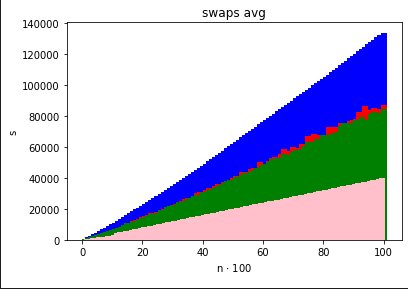
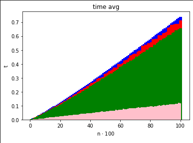
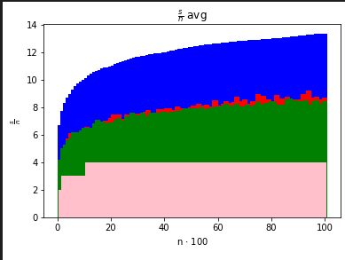

Uzupełnij zadanie 2 z listy 2 o algorytm RADIX SORT. Porównaj wcześniej zaimplementowane algorytmy z RADIX SORTEM pod względem liczby wykonanych operacji, czasu działania algorytmu oraz zużycia pamięci (wykorzystaj np.
sysinfolubGetProcessMemoryInfo), dla danych o rozmiarze \(n\in \{ 10,50,100,500,1000,5000,\dots,100000 \}\), sprawdź jak na działanie RADIX SORTa wpływa zakres, z którego losowane są dane do sortowania.
Jako, że jest to zadanie rozszerzające, praktycznie rzecz biorąc, całą poprzednią listę folder na zadanie 1 ma w sobie kopię całej listy 2 rozszerzonej o zadanie 1 z listy 3.
Dlatego też nazwy takie jak ex-1 czy też ex-2 odwołują się do odpowiednich zadań z listy 2. Mowa tutaj oczywiście tylko o plikach w folderze na zadanie 1.
W celu kompilacji programu należy użyć make. (Możliwe jest uprzednie posprzątanie make clean)
Żeby uruchomić program należy użyć ./main.out <params>, gdzie <params>:
--type - uruchom program z algorytmem:quick dla QuickSort (domyślny)insert dla InsertSortmerge dla MergeSortdual-pivot-quick dla DualPivotQuickSortradix dla RadixSort--comp - kolejność elementów:'>=' malejąca'<=' rosnąca (domyślna)--stat nazwa_pliku knazwa_pliku plik do którego program ma zapisać statystykik ile razy ma wykonać pętlę opisaną w zadaniu 2 listy 2Poniższe wykresy pokazują, że w przypadku sortowania liczb RadixSort radzi sobie najlepiej w porównaniu z poprzednio zaimplementowanymi algorytmami.
Liczba przestawień

Czas

Liczba przestawień nad n

gdzie: - kolor czerwony -> QuickSort - kolor zielony -> DualPivotQuickSort - kolor niebieski -> MergeSort - kolor różowy -> RadixSort
Do zmierzenia ilości zużywanej pamięci wykorzystywałem programu ps -p <PID> -o vsz w celu odczytania ilości wykorzystywanej pamięci wirtualnej.
Zmodyfikowałem program z listy 2 w ten sposób, żeby po jego uruchomieniu z parametrem --stat wyświetlał na samym początku działania swoje PID.
Program uruchamiałem z parametrem k = 10 poszczególne algorytmy i śledziłem zużycie pamięci procesów.
Algorytm RadixSort na końcu działania zużywał aż 111 772 kB wirtualnej pamięci (parametr VSZ).
Za to QuickSort zużywał jedynie 33 716 kB wirtualnej pamięci. Podobnie zachowywał się DualPivotQuickSort oraz InsertionSort.
Co ciekawe, zużycie pamięci w przypadku MergeSort rosło bardzo szybko przekraczając zużycie pamięci RadixSorta. Domyślam się jednak, że to wynika ze słabego działania garbage collector'a a nie z samego algorytmu.
Oczywiście w przypadku pamięci wchodzi też tutaj overhead w postaci innych komponentów programu, bo program nie składa się tylko z samego czystego algorytmu.
Jednakże różnica jest jak najbardziej zauważalna - po wyjściu z comparison model uzyskujemy sortowanie w czasie liniowym, jednak tracimy na wielkości potrzebnej pamięci.
Przy zmniejszeniu zakresu, z którego są losowane liczby do sortowania następuje nawet dwukrotne zmniejszenie się liczby przestawień oraz znacznie krótszy czas działania. Dzieje się tak nawet przy ciągach bardzo dużych rozmiarów.
Zaimplementuj podane na wykładzie algorytmy: RANDOMIZED SELECT, SELECT. Program przyjmuje jeden z dwóch parametrów wejściowych: - wywołanie
./main -roznacza operowanie na danych losowych długości \(n\) - wywołanie./main -poznacza operowanie na losowej permutacji zbioru \(\{1,2,\dots,n\}\). Po uruchomieniu, program wczytuje ze standardowego wejścia dwie liczby całkowite: \(n\) – długość danych oraz \(1\le k \le n\) – numeru szukanej statystyki pozycyjnej, a następnie generuje tablicę danych (zależnie od parametru uruchomienia) i sekwencyjnie uruchamia zaimplementowane algorytmy na wygenerowanych danych. W czasie wykonywania algorytmów SELECT, RANDOMIZED SELECT, na standardowym wyjściu błędów, powinien być wypisywany log, tak by można było działanie algorytmu odtworzyć. W szczególności powinien zawierać on tablicę danych, \(k\), kolejno wybierane pivoty, wykonywane porównania i przestawienia oraz podsumowanie zawierające liczbę porównań oraz przestawień elementów (Uwaga: w przypadkach, gdy nie jest to niezbędne dla znalezienia \(k\)-tej statystyki pozycyjnej, nie powinno następować sortowanie całej tablicy).Wynikiem, wyświetlanym na standardowym wyjściu, działania algorytmu jest tablica z zaznaczoną \(k\)-tą statystyką pozycyjną.
Przykładowe wywołanie:
./main -p 7 3 2 1 [3] 5 4 6 7Wykonaj testy, powtarzając wywołania algorytmów dla tych samych danych wejściowych, by wyciągnąć wnioski na temat minimalnej i maksymalnej liczby porównań dla obu algorytmów, policz również średnią i odchylenie standardowe dla zebranych statystyk.
W celu ułatwienia korzystania z programu algorytmy nie są uruchamiane jeden po drugim, a raczej na podstawie argumentów --select oraz --randomized-select.
W celu uruchomienia programu należy wykonać make oraz ./main.out <-p|-r> <--select|--randomized-select>.
Następnie należy podać liczby \(n\) oraz \(k\) oddzielone spacją lub nową linijką.
Do skompilowania poniższych statystyk uruchamiałem program na danych \(n = 128\), \(k = 32\) przy uruchamianiu programu z parametrem -p.
Liczba porównań: | . | SELECT | RANDOMIZED SELECT | | ---------------------: | :----: | :---------------: | | Maximum | 840 | 606 | | Minimum | 636 | 189 | | Średnia | 751.8 | 380 | | Odchylenie standardowe | 70.153 | 147.742 |
Zaimplementuj rekurencyjny algorytm wyszukiwania binarnego. Program na wejściu otrzymuje posortowaną tablicę długości \(n\) oraz wartość \(v\), i zwraca \(1\) w przypadku istnienia elementu \(v\) w tablicy lub \(0\) w przeciwnym przypadku. Przetestuj działanie Master theorem dla zliczonej w trakcie działania algorytmu liczby porównań elementów oraz czasu wykonania. Test powtórz dla \(n \in \{ 1000,2000,\dots,100000 \}\) i na ich podstawie oszacuj czynnik \(O(1)\) dla obu statystyk.
W celu uruchomieniu programu należy użyć ./main.py.
Program zwraca wynik testu opisany w zadaniu.